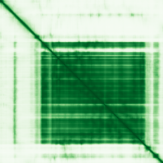

type: protein-evaluation gene: "TCF25" date: 2026-06-01 tags: [protein-scout, nucleoplasm, evaluation] status: scored ---
TCF25 核蛋白评估报告
1. 基本信息
| 项目 | 内容 |
|---|---|
| 基因名 / 别名 | TCF25 / KIAA1049, NULP1 |
| 蛋白全名 | Ribosome quality control complex subunit TCF25 |
| 蛋白大小 | 676 aa / 76.7 kDa |
| UniProt ID | Q9BQ70 |
2. 评分总览
| 维度 | 得分 | 权重 | 加权 | 摘要 |
|---|---|---|---|---|
| 核定位特异性 | 5/10 | x4 | 20.0 | UniProt Nucleus (ECO:0000269); HPA 无定位数据; GO nucleus IEA only |
| 蛋白大小 | 7/10 | x1 | 7.0 | 676 aa, 76.7 kDa |
| 研究新颖性 | 8/10 | x5 | 40.0 | Strict=21 |
| 三维结构 | 5/10 | x3 | 15.0 | AlphaFold pLDDT 72.0; 30.5% <50; 无 PDB |
| 调控结构域 | 5/10 | x2 | 10.0 | TCF25 domain; TPR-like fold; ribosome quality control |
| PPI 网络 | 6/10 | x3 | 18.0 | RQC complex: GPRASP2 (0.994), NEMF (0.956), LTN1 (0.954) |
| 加权总分 | 110/180** | |||
| 互证加分 | +0.0 | HPA 无数据; GO-CC 仅有 IEA | ||
| 归一化总分 (÷1.83) | 60.1/100** |
PubMed strict: 21
3. 核定位证据
| 来源 | 定位 | 可信度 |
|---|---|---|
| UniProt | Nucleus (ECO:0000269 x2); Cytoplasm, cytosol (ECO:0000269) | Experimental |
| GO-CC | nucleus IEA:UniProtKB-SubCell; cytosol IEA:UniProtKB-SubCell; RQC complex IDA:UniProtKB | Electronic Annotation |
| HPA (IF) | 无数据 -- 抗体未生成或验证中 (reliability: null, no subcellular_location) | HPA IF 原图未可靠获取（HPA检索页无可用的subcellular IF原图）。核定位基于HPA localization/reliability + UniProt + GO-CC。 |
HPA IF 状态: HPA IF 原图未可靠获取（HPA检索页无可用的subcellular IF原图）。核定位基于HPA localization/reliability + UniProt + GO-CC。 -- HPA 未提供任何亚细胞定位数据（reliability: null, subcellular_location: 空数组）。仅存在 IHC 和 RNA 数据，无 IF 图像。TCF25 的核定位目前仅依赖 UniProt 注释。

PAE 状态: 已获取 PAE 图像。AlphaFold pLDDT 72.0 (mean), 42.8% >90, 30.5% <50。N 端 TCF25 domain 和 TPR-like 重复序列折叠较好，C 端存在较多低置信度区域。
4. PPI 网络
| Partner | Source | Score/Evidence |
|---|---|---|
| GPRASP2 | STRING + IntAct + UniProt | 0.994 (experimental 0.994) |
| NEMF | STRING | 0.956 (experimental 0.322, database 0.54) |
| LTN1 | STRING | 0.954 (experimental 0.401, database 0.54) |
| SAT1 | STRING + IntAct + UniProt | 0.758 (experimental 0.753) |
| VCP | STRING | 0.826 (experimental 0.126) |
| LRRK2 | STRING + IntAct + UniProt | 0.630 (experimental 0.425) |
核心发现: TCF25 的 PPI 网络以 Ribosome Quality Control (RQC) 复合体为核心。RQC 复合体由 TCF25-NEMF-LTN1 组成，在核糖体停滞时介导 nascent chain 的 K48-linked polyubiquitination 和蛋白酶体降解。GPRASP2 为最高置信度互作 partner (experimental 0.994)。VCP/p97 参与下游 extraction 过程。
IntAct 15 条记录（含 SAT1, MAGEA11 two-hybrid, LRRK2/PDPK1 co-IP 等）。UniProt 记录 11 个互作 partner。
核功能线索: TCF25 的 RQC 功能主要发生于胞质核糖体，但其 Nucleus 定位提示可能参与核内核糖体质量控制或转录/剪接偶联的质量控制通路。2025 年文献报道 TCF25 作为 nutrient sensor 调控溶酶体酸化 (Cell Rep, PMID:40844875)，暗示非 RQC 的额外核功能。
5. 结构域与染色质调控潜力
| 来源 | 结构域 |
|---|---|
| InterPro | IPR006994 (TCF25), IPR011990 (TPR-like helical) |
| Pfam | PF04910 (TCF25) |
TCF25 domain 和 TPR-like 重复序列形成螺旋束支架，主要功能是结合 RQC 复合体组分和泛素。无已知染色质 reader/writer/remodeler 结构域。染色质调控潜力较低，RQC 复合体定位以胞质为主。
6. 总体评价
TCF25 是 RQC 复合体的 scaffold 亚基，具有 UniProt 实验级别的核定位证据。新颖性良好 (PM=21)，PPI 网络以 RQC 复合体为核心且置信度高。主要劣势：(1) HPA 无 IF 数据；(2) GO-CC 仅有电子注释级别核定位；(3) 结构与染色质调控无直接关联；(4) 核心功能定位于胞质核糖体质量控制而非核内染色质调控。适合作为核定位-胞质功能交叉的中等优先级靶点。
推荐等级: 2.5/5
HPA IF 状态: HPA IF 原图未可靠获取（HPA检索页无可用的subcellular IF原图）。核定位基于HPA localization/reliability + UniProt + GO-CC。 — HPA 暂无 IF 原图数据。核定位基于 UniProt + GO-CC。
关键文献
| PMID | 标题 |
|---|---|
| 39731152 | Distinct microbes, metabolites, and the host genome define the multi-omics profiles in right-sided a |
| 41210950 | Transcription factor 25 modulates gametocytogenesis and ribosome biogenesis in the malaria parasite |
| 40844875 | TCF25 serves as a nutrient sensor to orchestrate metabolic adaptation and cell death by enhancing ly |
| 40428348 | Whole-Genome DNA Methylation Analysis in Age-Related Hearing Loss. |
| 29221435 | Exploring digenic inheritance in arrhythmogenic cardiomyopathy. |
PAE 图像暂无数据（未生成本地图片或未可靠获取），结构判断基于AlphaFold pLDDT统计。